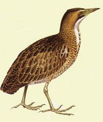
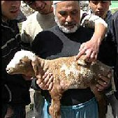

Friday, July the 15th, 2005
back to: title, date or indexes
Here is an amusing diversion to test your wits. Below are some pictures. Using your skill and judgement, after drinking a cup of cocoa and improvising some caterwauling vocal exercises as if you were a small, terrified animal, see if you are able to identify the nun.
 
A, B, C and D
Send your answers to the Spot The Nun Competition Judging Panel, with the subject header “I think I know which one the nun is”. The winning entry will be drawn from a hat, or pouch, or bag, on a day of inclement weather.